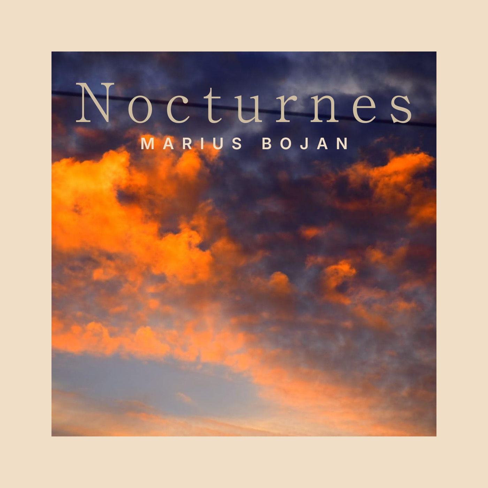

Projets

J’ai le plaisir de vous présenter mon projet en guitare solo. Il s’articule autour d’une esthétique inspirée de la Folk anglo-saxonne et de la musique improvisée, qui trouve son inspiration dans le Jazz.
Il s’intitule « Nocturnes » en référence aux ambiances par lesquelles je me laisse porter à la nuit tombée avec ma guitare depuis mon enfance jusqu’à aujourd’hui.
C’est un album qui raconte également l’histoire de la venue au monde de mon fils. J’ai souhaité lui rendre hommage et lui faire part de ce que je ressens pour lui de l’annonce de sa venue à aujourd’hui.
Cet album de berceuses est comme un voyage vers la douceur et le temps qui passe, et nous invite au calme pour nous permettre d’apercevoir la beauté de ce monde.
Les compositions interprétées dans cet album sont totalement improvisées sur le moment et chaque morceau est une découverte au moment de l’enregistrement. C’est une belle expérience que j’ai eu la chance et le bonheur de vivre.
Cet album a été enregistré au @melodiumstudio (71 rue Robespierre, 93100 Montreuil), en compagnie de Nicolas Dufournet et son équipe. Je remercie également @ad0meni pour la captation de l’intégralité de ce projet ainsi que les propositions artistiques qui ont permis d’élaborer tout l’ensemble de l’album.